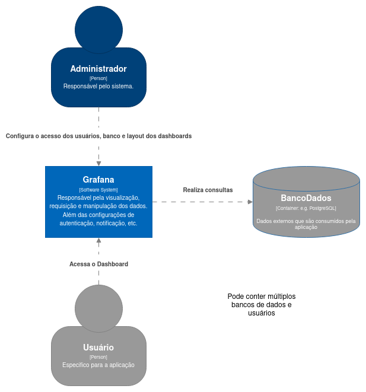

Grafana
Autores
Este documento foi produzido por Áxel Crispim e Medeiros.
- Matrícula: 117111889
- Contato: axel.medeiros@ccc.ufcg.edu.br
- Projeto documentado: https://github.com/grafana/grafana
Descrição Arquitetural – Grafana
Este documento descreve parte da arquitetura do projeto Grafana. Essa descrição foi baseada principalmente no modelo C4.
É importante destacar que não será descrita toda a arquitetura do Grafana. O foco aqui é a descrição de um serviço específico de análise do Grafana(Dashboard), que é parte fundamental do projeto.
Descrição Geral sobre o Grafana
O Grafana é um projeto que tem como objetivo ser uma plataforma para visualização e monitoramento de dados, possibilitando com a construção de “dashboards” dinâmicos e reutilizáveis. Portanto, a ferramenta possui integração os principais bancos de dados disponíveis no mercado, como descrito neste link, além disso, é possível adicionar múltiplos “datasources” para o mesmo “dashboard”.
Objetivo
Ser uma plataforma open-source para visualização e monitoramento de dados, atuando em CLI, plugins e outras ferramentas para o suporte para os usuários.
Contexto
Como o Grafana se trata de uma plataforma, os usuários finais devem ser o mais diversos possíveis, sendo esses divididos em: administradores e comuns. Para os administradores, é necessário um conhecimento da linguagem de consulta da sua fonte de dados, e os comuns, apenas acesso a um navegador Web moderno.
A comunicação com a fonte pode ser local ou externa, geralmente, utilizando o protocolo TCP e uma porta para o acesso, com o SGBD previamente configurado para o acesso remoto. Sendo essa consulta diferenciada para cada banco de dados.
O diagrama de contexto abaixo ilustra quais entidades interagem com o Grafana.

Containers
A plataforma Grafana é dividida em três grandes containers, sendo eles: Frontend, GrafaInfra e Backend. Apesar que o Backend não sendo o foco dessa documentação.
O Frontend é a parte visual do projeto, com CoreModule responsável pelo inicialização do AngularJS e serviços básicos, como cards, forms e configurações globais. Tornando o domínio das funcionalidades responsáveis por todas as Features do projeto, como adição de Datasource, Dashboard, painéis, etc. Com a utilização do Redux a principal comunicação no proejto.
O GrafanaInfra(ou pacotes)possui o mesmo objetivo da infra do Clean Architecture, cujo objetivo é isolar o projeto de bibliotecas externas. Além dos containers mencionados abaixo, possui também umresponsável por testes end-to-end e uma CLI para criação de plugins, facilitando o desenvolvimento da plataforma.

Componentes
A maioria das funcionalidade dos sistema estão presentes no pacote features, com esssas funções seguindo a padronização definida no style-guide. Assim, os componentes do sistema seguem:
feature/state: todo código responsável pela lógica de domínio e estado da funcionalidade. Seguindo a arquitetura Redux, com stores, actions e reducers.feature/containers/ExamplePage.tsx: Página ou componente central da sua funcionalidade, onde vai carregar todos os componentes presentes na feature.feature/componets: todos os componentes React que estão compondo sua funcionalidade, geralmente, divididos por pastas por componente, sendo essas pastas possuindo a lógica, estilização e testes de componentes.
Para a utilização de bibliotecas externas, é necessário adicionar código no GrafaInfra, sendo esses:
@grafana/ui: para componentes e tipos relacionados a UI.@grafana/data: para modelo de dados e utilitários utilizados.@grafana/runtime: para acesso a serviços da plataforma Grafana.
Segue um diagrama contendo apenas a parte da layout dos componenes